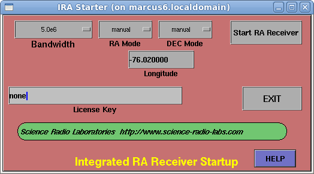

The IRA Starter window is used to set parameters for the Gnu Radio receiver subsystem, then start the main IRA application.

This control is used to set the desired observing bandwidth (and thus, the underlying sampling rate) for the receiver subsystem.
The choices for a USRP1 are:
250KHz
500KHz
1MHz
2MHz
3.2Mhz
4MHz
6.4MHz
8MHz
16MHz
The choices for a USRP2/N2XX are:
250KHz
500Khz
1Mhz
2MHz
2.5Mhz
5MHz
10MHz
16.67MHz
25MHz
You should pick a bandwidth that is compatible both with your observing regime, and the compute power available to you. For example, a dual-CPU Pentium D 925 system running at 3.2GHz can observe a single channel at 4 to 5MHz bandwidth, with only occasional buffer overruns from Gnu Radio.
A more modern, multi-core system running at 3.5GHz can handle a 10MHz to 25MHz stream.
This input area allows you to enter your local longitude, which is required in calculating your local mean sidereal time (LMST). Use decimal format, with negative values used to indicate longitudes that are WEST of the prime meridian. For example, -63.500 is 63 degrees, 30 minutes WEST longitude, while 63.50 is 63 degrees, 30 minutes EAST longitude. Remember to press ENTER to have the entered longitude take effect.
RA MODE
This choice control sets the mode used to determine RA (Right Ascension) during an observation run with IRA. The choices are:
manual
RA is input manually in the RA input area of the IRA control panel
transit
The RA is set dynamically to the current LMST—which is useful for instruments set up in meridian transit mode, in which the azimuth axis is fixed on a line that runs exactly NORTH-SOUTH through the axis of the dish, and only the declination (elevation) axis is movable.
external
This mode allows IRA to get RA (Right Ascension) information from an external file. When this choice is selected, a file browser will pop-up, to allow you to select a file from which RA information is determined dynamically. While operating in this mode, IRA will inspect the selected file once per second to determine current RA information. This allows external tracking and telescope control software to control the antenna, while informing the receiver where the antenna is pointed.
DEC MODE
This choice control sets the mode used to determine DEC (Declination) during and observation run with IRA. The choices are:
manual
DEC is input manually in the DEC input area of the IRA control panel
external
This mode allows IRA to get DEC (Declination) information from an external file. When this choice is selected, a file browser will pop-up, to allow you to select a file from which DEC information is determined dynamically. While operating in this mode, IRA will inspect the selected file once per second to determine current DEC information. This allows external tracking and telescope control software to control the antenna, while informing the receiver where the antenna is pointed.
This input area is used to enter your license key. If you don't have a license key, the software will automatically expire approximately 30 days after you receive it. If you don't have a license key, enter the word “none” in this area. Remember to press ENTER to have the entered license key data take effect.
START RA RECEIVER
This button control causes the IRA main control panel to start, and this starter panel to be closed. The IRA control panel will use the parameters provided in the startup panel.
EXIT
This button control allows you to exit the IRA starter, without causing the IRA main control panel to start. This is useful for changing stored settings, without starting the IRA main control panel.
This document is displayed in the Firefox browser, when you press this button.